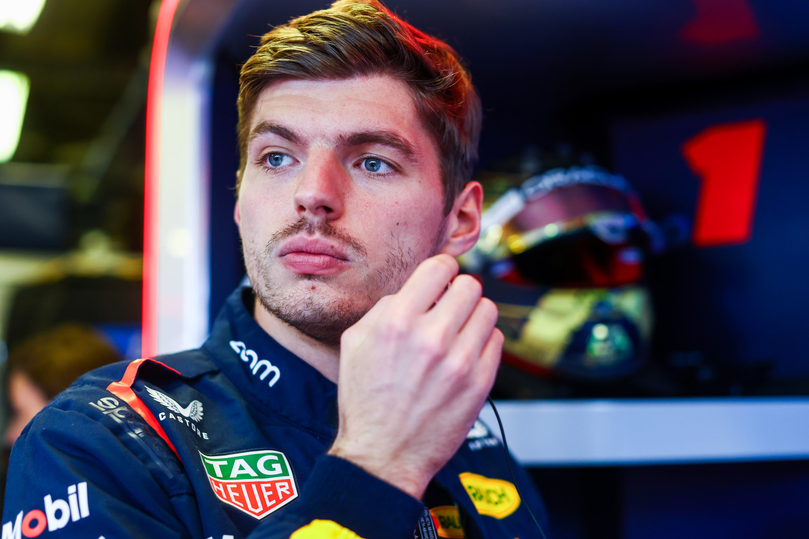

La voiture de Red Bull Racing en Formule 1 incarne l'innovation et la performance. Arborant un design aérodynamique distinctif, elle fusionne puissance et élégance. Propulsée par un moteur high-tech, elle fait rugir la piste avec une précision remarquable. Les couleurs vives et le logo emblématique de Red Bull soulignent son caractère audacieux. Chaque détail, des pneus aux ailerons, est minutieusement optimisé pour maximiser la vitesse et la maniabilité, faisant de la voiture de Red Bull Racing un véritable symbole de l'excellence dans le monde de la F1.

Max Verstappen, né le 30 septembre 1997 à Hasselt en Belgique, est un pilote automobile néerlandais de renommée mondiale. Dès son jeune âge, il montre un talent exceptionnel en karting, grimpant rapidement les échelons du sport automobile. En 2015, il devient le plus jeune pilote de Formule 1 à seulement 17 ans. Sa conduite agressive et sa détermination ont fait de lui l'un des pilotes les plus excitants et redoutés de la grille. Avec plusieurs victoires et des performances impressionnantes, Verstappen continue de défier les attentes et d'inspirer une génération de fans.
